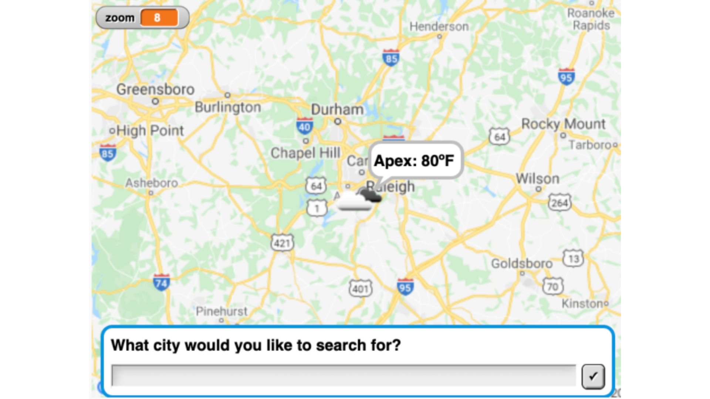

Computer Science Intern - Game2Learn Lab, North Carolina State University
- Selected as 1 of 31 students to collaboratively employ the CS4All Initiative by developing a curriculum and software tools (shown in the picture above) to provide Computer Science and Computational Thinking experiences to 150+ K- 12 classrooms across North and South Carolina.
- Supported a joint CS Frontiers project between NCSU and Vanderbilt University.
- Tested advanced block-based educational simulations and programs.
- Trained teachers to apply these skills in the classroom by providing Snap! and Computer Science support at our four- day-long Infusing Computing Professional Development event hosted by The Citadel and NCSU.